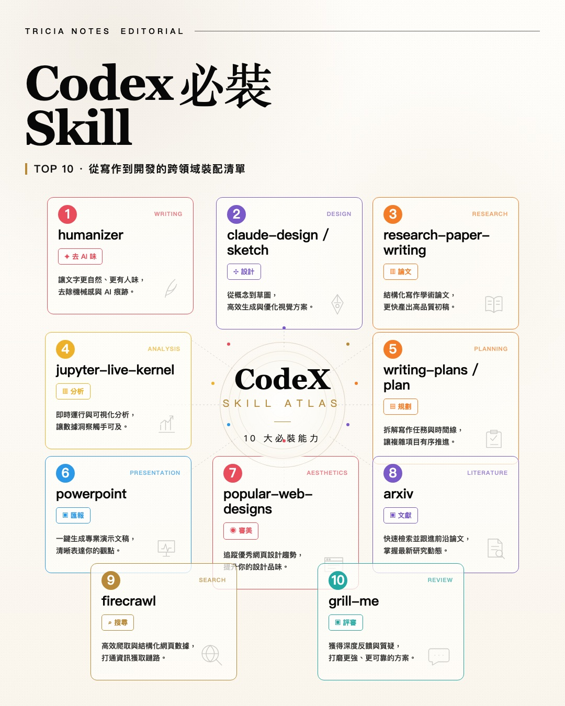

Threads｜GitMind：10 個必裝 Skill（研究、寫作與寫 Code 工作流）

一句話摘要
GitMind 這則 Threads 將 AI Agent 的「Skill」概念整理成研究、寫作、簡報、設計與程式開發都能使用的工具箱，重點是把能力模組化，而不是每次從空白 prompt 開始。
原文可見清單
這 10 個「必裝 Skill」不管是做研究、寫作還是寫 Code，都超實用：
- humanizer：去 AI 味，讓文字更有真人氣息。
- claude-design / sketch：從概念高效生成視覺草圖。
- research-paper-writing：結構化產出高品質學術初稿。
- jupyter-live-kernel：即時運行數據與視覺化分析。
- writing-plans / plan：拆解複雜寫作任務與時間線。
- powerpoint：一鍵生成專業簡報文稿。
- popular-web-designs：追蹤優秀網頁設計趨勢。
- arxiv：快速檢索跟進前沿論文。
- firecrawl：高效爬取與結構化網頁數據。
- grill-me：獲得深度反饋，打磨更可靠方案。
對欒帥的實用整理
這份清單可以直接拆成幾種常用工作流：
### 研究與論文
- arxiv：找最新論文與相關研究。
- research-paper-writing：把研究問題、方法、實驗與結果組成論文初稿。
- jupyter-live-kernel：處理資料分析、圖表與驗證。
- grill-me：用批判式回饋檢查論點、方法與實驗設計是否站得住腳。
### 寫作與內容
- writing-plans / plan：先拆結構、時間線與產出規格。
- humanizer：最後降低 AI 味，讓文字更貼近真人語氣。
- powerpoint：將文章、課程或研究重點轉成簡報草稿。
### 設計與展示
- claude-design / sketch：快速產生 landing page、課程頁、demo UI 或視覺草圖。
- popular-web-designs：借鏡成熟產品設計語彙，例如 Linear、Stripe、Vercel 類型的高質感介面。
### 資料擷取與知識整理
- firecrawl：適合把網頁轉成結構化資料，接到 RAG、知識庫或研究摘要流程。
- arxiv + firecrawl + writing-plans：可以形成「搜尋 → 擷取 → 結構化 → 寫作」的研究助理流程。
Hermes 現況對照
目前 Hermes skill 清單中可直接對應的已包含：
- humanizer
- claude-design
- sketch
- research-paper-writing
- jupyter-live-kernel
- writing-plans
- plan
- powerpoint
- popular-web-designs
- arxiv
原文提到的 firecrawl、grill-me 在目前可見 Hermes skill 清單中未列為同名技能；若之後要補齊，可考慮建立：
- firecrawl / web extraction 類技能：標準化網頁擷取、清理、去廣告、轉 markdown、保留 canonical URL 與 metadata。
- grill-me 類技能：以 code review / research review / product critique 的方式提出反方問題、風險、盲點與改善建議。
為什麼保存
Skill-based Agent workflow 是 Hermes 本身的重要能力：把常見任務的最佳做法寫成可重用模組，未來遇到研究、寫作、簡報、設計、程式開發或知識庫整理時，就不必每次重建流程。這則 Threads 很適合作為「給使用者看的技能清單入口」，也能作為之後整理 Hermes skill 教學、課程 demo、AI Agent 工作坊案例的素材。